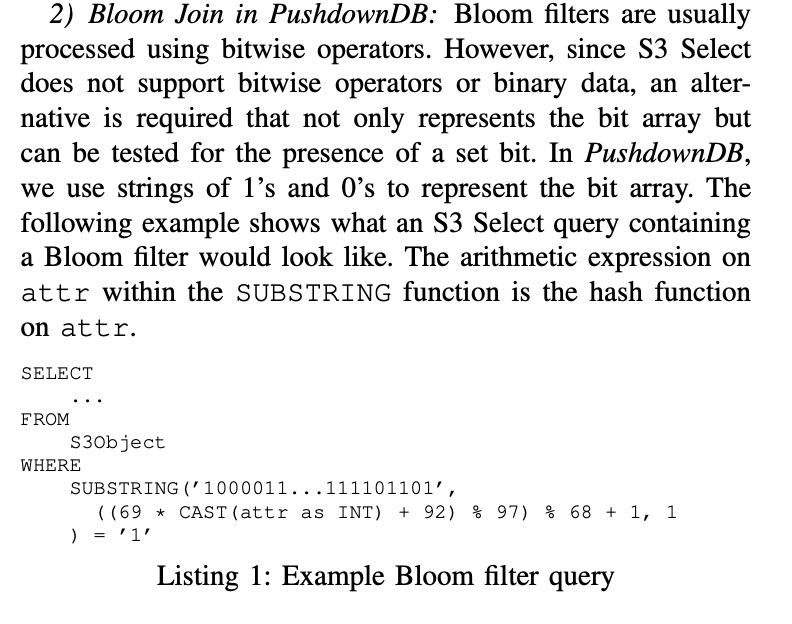

PushdownDB: Accelerating a DBMS using S3 Computation
简单地看了一下这篇论文，主要的东西就是如何将一些常用算子和S3 Select结合起来，而且其实结合的还有点别扭。 https://github.com/yxymit/s3filter
S3 Select是2018年推出的服务，在S3上面单独进行计费的，而且在上面计算成本比EC2还要高。S3 Select只提供了常见的selection, projection, simple aggregation(no group-by)操作，其他算子想移植上去需要做点工作（而且好像工作成本不低）
The question is nontrivial as the limited computational interface of S3 Select allows only certain simple query operators to be pushed into the storage layer, namely selections, projections, and simple aggregations. Other operators require new implementations to take advan- tage of S3 Select. Moreover, S3 Select pricing can be more expensive than computing on normal EC2 nodes.
To reduce network traffic and the associated processing on compute nodes, AWS released a new service called S3 Select [10] in 2018 to push limited computation to the storage nodes. Normal S3 supports put/get operators that write/read a whole object or part of it (based on byte offsets). S3 Select adds support for a limited set of SQL queries. At the current time, S3 Select supports only selection, projection, and aggregation without group-by for tables using the CSV or Parquet [14] format.
S3 Select cost. S3 Select introduces a new cost component that is based on the amount of data scanned ($0.002/GB) in processing an S3 Select query and the amount of data returned ($0.0007/GB). The cost for data return depends on the selectivity of the query. Data scan and transfer cost is typically a major component in overall query cost when S3 Select is in use.
几个operator移植方式：
- filter. 这个我不太明白为啥还需要创建index. 看上去s3 select已经支持where子句
- join. 主要是bloom filter, 可以将hash function和bloom filter写入SQL中，可以工作但是有点奇怪，容易收到SQL长度限制(256KB)。
- group-by. 可以将group-by expr枚举出来，然后按照每个枚举值分别做agg.
- top-k. 先进行sample, 估算出order value大致范围，然后增加where clause.

可以看到上面这些operator为了结合s3-select有点别扭，所以作者给s3-select提出一些意见：
- Multiple byte ranges for GET requests. 支持多个byte-ranges. 这个需求可能是和作者自己创建的index有关系，index里面多个value分别在不同的scan ranges上。作者想要一个http request就可以拿到多个scan range上的值，否则发送多次的话HTTP Request费用更高(S3还需要有HTTP request计费)
- Index inside S3.
- More efficient Bloom filters. 这个好像挺需要的，但是两边都需要商量好hash function和bloom filter表示，使用substr和ascii 01是有点低效。
- Partial group-by.
- Computation-aware pricing. 现在的S3计费是按照data scanned数量，而没有考虑在上面的计算代价。作者觉得在上面计算代价很小，收费应该少点，应该把计算代价考虑进去。